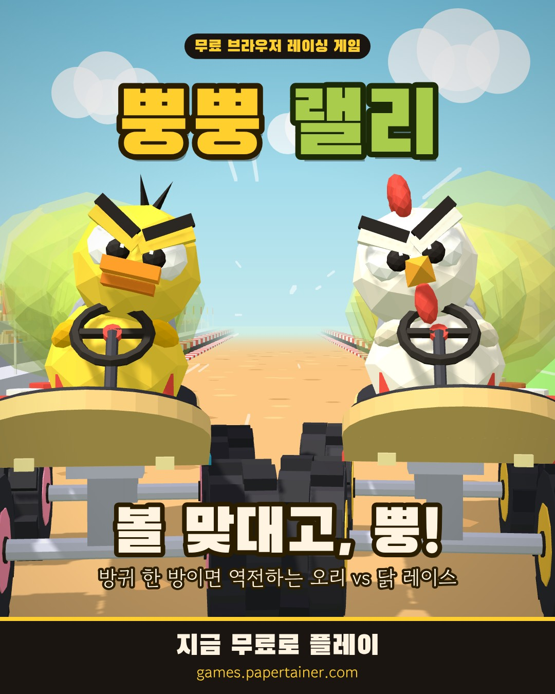
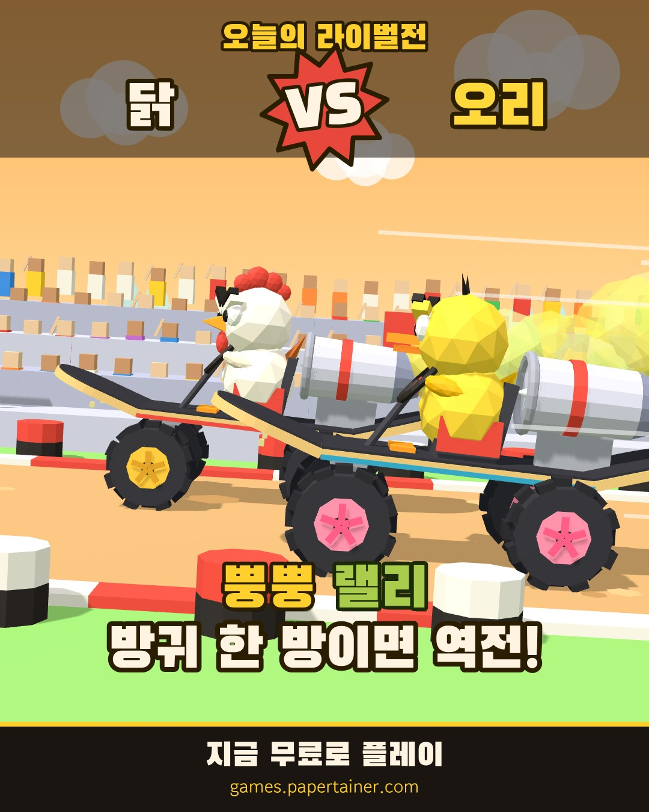
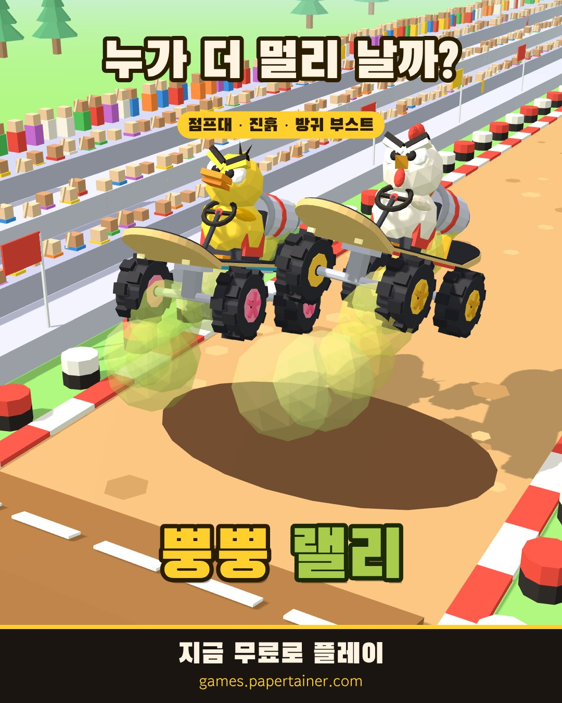

<title>뿡뿡 랠리 인스타 배너 시안</title>
<meta name="claude:viewport-fit-sides" content="cover">
<link rel="preconnect" href="https://fonts.googleapis.com">
<link rel="preconnect" href="https://fonts.gstatic.com" crossorigin>
<link rel="stylesheet" href="https://fonts.googleapis.com/css2?family=Black+Han+Sans&family=Gowun+Dodum&display=swap">
<style>
/* Layout: a pitch board for three Instagram feed posts. Each concept is a phone-sized post preview beside its scheme (idea, copy, layout, when to use). Single dark look matching the game. */
:root{
  --night:#1b1511;
  --panel:#2b211a;
  --panel-2:#3a2c21;
  --line:#5a4532;
  --ink:#fff4e2;
  --muted:#c9b597;
  --accent:#ffcf2e;
  --green:#a9cc4c;
  --display:"Black Han Sans","Apple SD Gothic Neo","Malgun Gothic",sans-serif;
  --body:"Gowun Dodum","Apple SD Gothic Neo","Malgun Gothic",sans-serif;
  color-scheme:dark;
}
html{background:var(--night)}
body{background:var(--night);color:var(--ink);font-family:var(--body);font-size:15px;line-height:1.6;margin:0}
.wrap{max-width:1080px;margin:0 auto;padding-left:max(16px,env(safe-area-inset-left,0px));padding-right:max(16px,env(safe-area-inset-right,0px));padding-block:26px 48px;display:flex;flex-direction:column;gap:28px}
h1,h2,h3{font-family:var(--display);font-weight:400;margin:0;line-height:1.15;text-wrap:balance}
h1{font-size:clamp(30px,5.5vw,48px);color:var(--accent);text-shadow:0 4px 0 #8a5a00}
h2{font-size:28px}
h3{font-size:15px;color:var(--green);letter-spacing:.04em}
p{margin:0}
.lede{color:var(--muted);max-width:68ch}
.concept{display:grid;grid-template-columns:minmax(0,420px) minmax(0,1fr);gap:22px;align-items:start;background:var(--panel);border:2px solid var(--line);border-radius:20px;padding:18px}
@media (max-width:820px){.concept{grid-template-columns:1fr}}
.post{margin:0;display:flex;flex-direction:column;gap:6px;min-width:0}
.post img{width:100%;max-width:100%;aspect-ratio:4/5;object-fit:cover;border-radius:12px;display:block}
.post figcaption{font-size:12px;color:var(--muted)}
.scheme{display:flex;flex-direction:column;gap:14px;min-width:0}
.code{font-family:var(--display);font-size:13px;color:var(--muted);letter-spacing:.06em}
.pick{align-self:flex-start;font-family:var(--display);font-size:13px;padding:4px 10px;border-radius:999px;background:var(--accent);color:#2b1d00}
dl{display:grid;grid-template-columns:auto 1fr;gap:6px 14px;margin:0}
dt{font-family:var(--display);color:var(--accent);font-size:14px;white-space:nowrap}
dd{margin:0}
.copy{background:var(--panel-2);border-radius:12px;padding:12px 14px;display:flex;flex-direction:column;gap:4px}
.copy b{font-family:var(--display);font-weight:400;font-size:20px}
.common{background:var(--panel);border:2px solid var(--line);border-radius:20px;padding:18px;display:flex;flex-direction:column;gap:10px}
.common ul{margin:0;padding-left:20px;display:flex;flex-direction:column;gap:5px}
</style>

<main class="wrap">
  <header style="display:flex;flex-direction:column;gap:10px">
    <h1>오리 vs 닭, 인스타 배너 시안 3종</h1>
    <p class="lede">실제 게임 모델(슈퍼 D 제트보드)로 장면을 연출해서 찍었어요. 오리는 원래 성난 오리 그대로, 닭은 같은 화난 얼굴 스타일에 볏과 짧은 부리, 육수를 달아 새로 만들었어요. 크기는 인스타 피드에 가장 크게 보이는 4:5 세로(1080×1350)예요.</p>
  </header>

  <section class="concept" aria-labelledby="ca">
    <figure class="post"><figcaption>1080 × 1350 · 피드용</figcaption></figure>
    <div class="scheme">
      <p class="code">시안 A</p><span class="pick">메인 배너 추천</span>
      <h2 id="ca">볼 맞대고, 뿡!</h2>
      <dl>
        <dt>장면</dt><dd>정면 낮은 시점. 오리와 닭이 서로 고개를 기울여 볼을 맞댄 채 달리고, 양쪽 제트에서 방귀 구름이 뿜어져 나와요.</dd>
        <dt>노리는 것</dt><dd>두 캐릭터의 성난 얼굴이 가장 크게 보여서, 피드에서 스크롤을 멈추게 하는 힘이 제일 커요. 게임 이름과 캐릭터를 처음 알리는 첫 게시물로 좋아요.</dd>
        <dt>배치</dt><dd>위: 무료 게임 표시와 로고 · 가운데: 두 얼굴 · 아래: 큰 문구와 설명 · 맨 아래: 플레이 띠</dd>
      </dl>
      <div class="copy"><b>볼 맞대고, 뿡!</b><span>방귀 한 방이면 역전하는 오리 vs 닭 레이스</span></div>
    </div>
  </section>

  <section class="concept" aria-labelledby="cb">
    <figure class="post"><figcaption>1080 × 1350 · 피드용</figcaption></figure>
    <div class="scheme">
      <p class="code">시안 B</p>
      <h2 id="cb">오늘의 라이벌전</h2>
      <dl>
        <dt>장면</dt><dd>옆에서 본 질주. 닭이 반 차체 앞서고 오리가 바짝 쫓아요. 노을빛 하늘과 관중석으로 경기 분위기를 냈어요.</dd>
        <dt>노리는 것</dt><dd>"VS" 구도라 댓글로 "오리 편 / 닭 편" 투표를 붙이기 좋아요. 참여를 끌어내는 게시물이나 시리즈("오늘의 라이벌전 #1")로 쓰기 좋아요.</dd>
        <dt>배치</dt><dd>위: 대결 띠(닭 · VS · 오리) · 가운데: 두 차 · 아래: 로고와 문구 · 맨 아래: 플레이 띠</dd>
      </dl>
      <div class="copy"><b>방귀 한 방이면 역전!</b><span>본문 예시: "당신은 오리 편? 닭 편? 댓글로 응원하고 직접 달려보세요"</span></div>
    </div>
  </section>

  <section class="concept" aria-labelledby="cc">
    <figure class="post"><figcaption>1080 × 1350 · 피드용</figcaption></figure>
    <div class="scheme">
      <p class="code">시안 C</p>
      <h2 id="cc">누가 더 멀리 날까?</h2>
      <dl>
        <dt>장면</dt><dd>실제 게임 카메라에 가까운 위쪽 시점. 두 차가 점프대를 넘어 진흙 웅덩이 위를 날아가고 아래에 그림자가 떨어져요.</dd>
        <dt>노리는 것</dt><dd>게임이 실제로 어떻게 생겼는지(관중석, 타이어 벽, 코스)를 보여줘서 "해볼까?"로 이어지기 좋아요. 플레이 영상(릴스)의 표지로도 어울려요.</dd>
        <dt>배치</dt><dd>위: 질문 문구와 특징 태그 · 가운데: 점프 장면 · 아래: 로고 · 맨 아래: 플레이 띠</dd>
      </dl>
      <div class="copy"><b>누가 더 멀리 날까?</b><span>점프대 · 진흙 · 방귀 부스트</span></div>
    </div>
  </section>

  <section class="common" aria-labelledby="cm">
    <h2 id="cm">공통 스킴</h2>
    <ul>
      <li><b>톤:</b> 유치하지만 웃긴 경쟁. 두 캐릭터 모두 화난 얼굴로 진지하게 달려서 생기는 웃음이 핵심이에요.</li>
      <li><b>색:</b> 오리는 노랑, 닭은 흰색과 빨강. 로고는 노랑 "뿡뿡"과 초록 "랠리"(방귀 색)로 고정해요.</li>
      <li><b>글꼴:</b> 제목은 굵은 블랙한산스, 설명은 고운돋움. 게임 화면과 같아요.</li>
      <li><b>맨 아래 띠:</b> 모든 시안에 "지금 무료로 플레이 · games.papertainer.com"을 같은 자리에 둬서 시리즈로 보이게 했어요.</li>
      <li><b>추천 순서:</b> A로 처음 알리고 → B로 참여 유도 → C로 게임 모습 보여주기.</li>
    </ul>
  </section>
</main>
